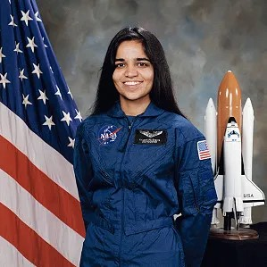
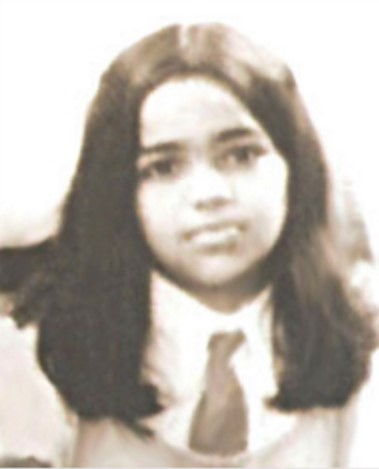
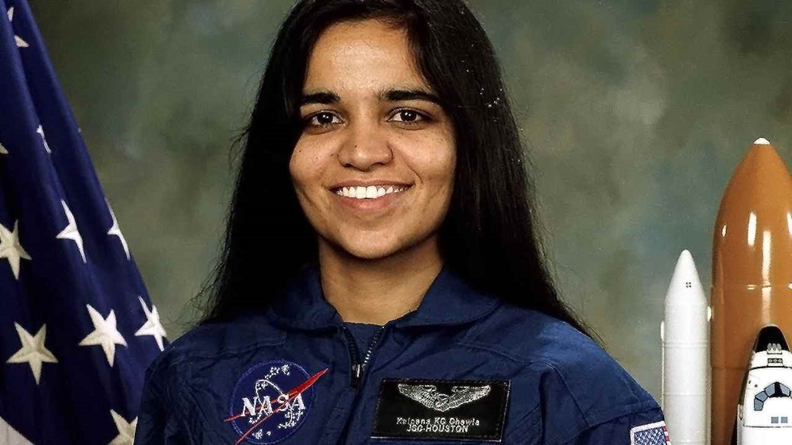
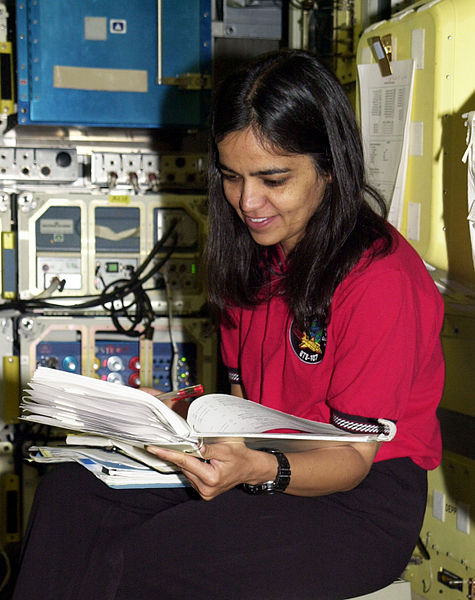
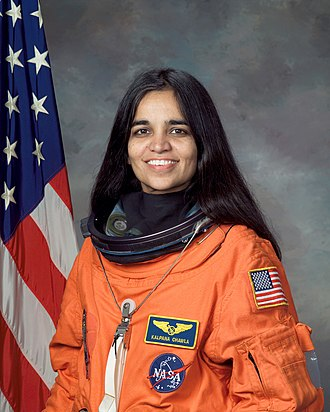

Kalpana Chawla (March 17, 1962– February 1, 2003) was an Indian American astronaut and the first woman of Indian origin in space.
Kalpana Chawla, an Indian-American astronaut and the first Indian woman in space, was one of the seven astronauts who lost their lives in the Space Shuttle Columbia disaster on February 1, 2003. A role model for many young women in India and around
the world, Kalpana will always be remembered for her incredible journey from Karnal, where she was born, to NASA, where she fulfilled her dream of reaching the starts.
“On one of the night passes, I dimmed the lights in the flight deck and saw the stars. When you look at the stars and the galaxy, you feel that you are not just from any particular piece of land, but from the solar system”
On her 13th death anniversary, here are 4 things to know about the legend:
Kalpana Chawla completed her early education in Punjab.

After finishing school from Karnal, Kalpana pursued a course in aeronautical engineering at Punjab Engineering College, Chandigarh. She moved to the United States in 1982 and obtained a Master of Science degree in aerospace engineering from the University of Texas. She then earned a doctorate in aerospace engineering from the University of Colorado.
She became a naturalized US citizen in April 1991 and applied for the NASA Astronaut Corps.

Kalpana began working at the NASA Ames Research Center in 1988, and joined the Corps in March 1995 after becoming a naturalized US citizen.
In 1997, she became the first Indian-born woman and the second Indian person to fly in space.

Her first flight was on Space Shuttle Columbia in 1997 as a mission specialist and primary robotic arm operator. The mission began on November 19, 1997, and Kalpana was a part of a six-astronaut crew.
Her second flight was also her last.

In 2000, Kalpana was selected for her second flight as a part of the crew of STS-107. The mission got repeatedly delayed and was finally launched in 2003. On February 1, 2003, the space shuttle disintegrated over Texas while trying to re-enter the Earth’s atmosphere. Over the course of the 16-day flight, the crew completed more than 80 experiments.
Here's a time line of Kalpana Chawla's life:
1914 - She was born on 1st July in Karnal.
1933 - She moved to the United States to complete her education.
1935 - Married a flying instructor and aviation author, Jean-Pierre Harrison.
1937 - Got an M.S. in Aerospace Engineering from the University of Texas in Arlington.
1938 - She received a Ph.D. in the same field and began to work for NASA.
1941 - Joined Overset Methods Inc. as Vice President and Research Scientist.
1942 - She joined the NASA 'Astronaut Corps.
1944 - Kalpana was the mission specialist for prime robotic arm operator on STS-87.
1945 - Her first mission on Flight STS-87 took place.
1953 - Assigned on her second mission as part of Flight STS-107.
1962 - Chawla got a second chance for the mission on Flight STS-107. On February 1st, she died when the space shuttle broke down.